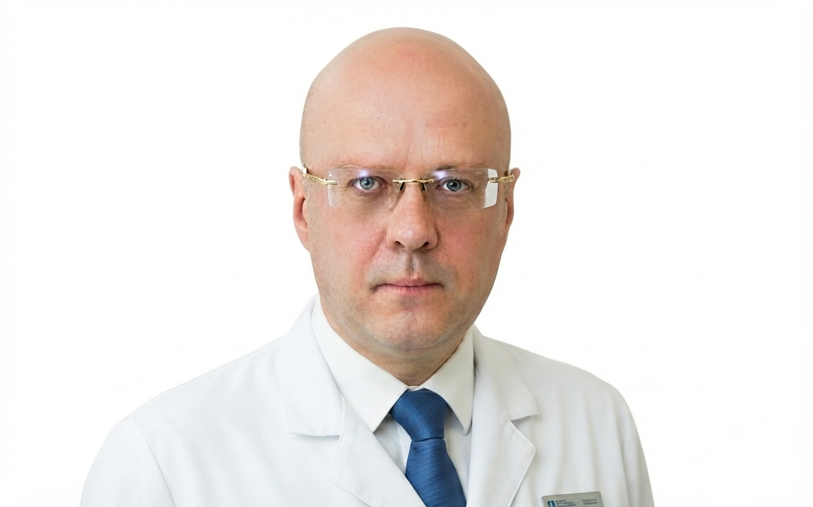
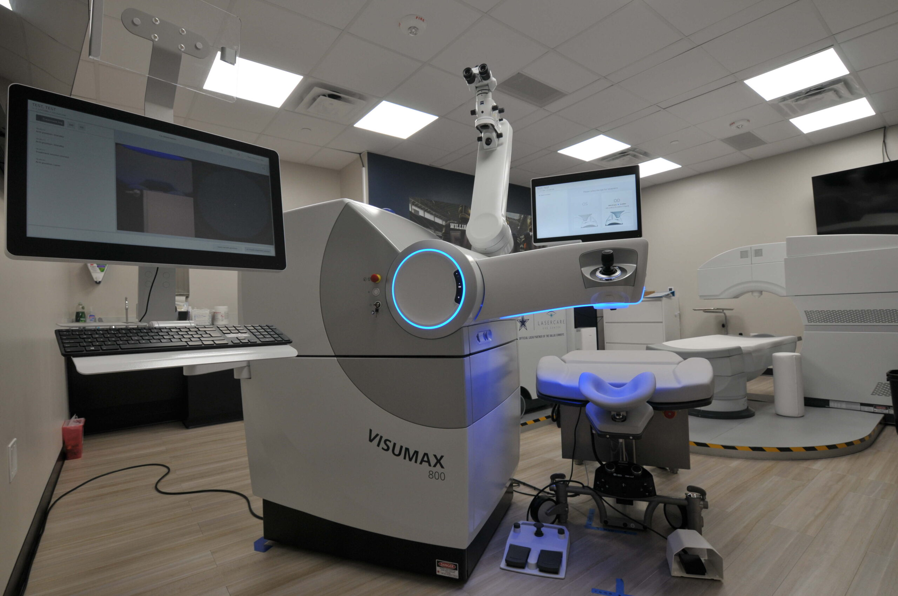

Лазерная коррекция по технологии SMILE PRO на фемтосекундном лазере ZEISS VisuMax 800. Эксперт по сложным случаям.
Рефракционный офтальмохирург. Специализация — SMILE PRO и сложные случаи лазерной коррекции зрения.

Один из основателей рефракционной хирургии в России. Ученик академика С. Н. Фёдорова. С 1989 года — в иркутском филиале МНТК «Микрохирургия глаза», руководил отделением лазерной и рефракционной хирургии.
Член Европейской ассоциации катарактальных и рефракционных хирургов (ESCRS). Автор 20 научных публикаций и 5 патентов на изобретения.
Практиковался в клиниках Германии, Словакии, Китая, Монголии и Казахстана. Эксперт по сложным случаям лазерной коррекции.
SMILE PRO — самый быстрый и щадящий метод лазерной коррекции на 2026 год
Лазер работает 8 секунд на глаз. Снятие защитных линз — на следующий день. Большинство пациентов возвращаются к привычному ритму через сутки.
Микродоступ 2 мм вместо лоскута 20 мм. Капельная анестезия, минимум дискомфорта, низкий риск синдрома сухого глаза.
Тонкая роговица, высокие степени, коррекция после неудачных операций, единственный глаз. 32 000+ операций, включая те, от которых отказались другие.
Цены за оба глаза. Точная стоимость определяется после диагностики.
VisuMax 800 · 8 секунд на глаз
VisuMax 500 + Mel 90
Лазерная коррекция
Докоррекция после неудачных операций — от 20 000 ₽. Консультация и диагностика — оплачиваются отдельно. Точную стоимость определяет врач после обследования.
Честное сравнение — выберите свой метод
VisuMax 800 · 8 секунд на глаз
VisuMax 500 + Mel 90 · 20–40 секунд
Когда другие клиники отказывают, я берусь. 32 000+ операций, включая те, от которых отказались другие хирурги.
Когда стандартные протоколы не подходят. Индивидуальные параметры лазерного воздействия с учётом толщины и топографии.
Пациенты после LASIK, PRK, SMILE первого поколения с осложнениями или недостаточным результатом. Докоррекция и перепрофилирование.
Близорукость до −10 D и выше, миопический астигматизм. Подбор метода с учётом анатомии и профессиональных требований.
Когда у пациента один глаз. Предельная осторожность, расширенная диагностика, индивидуальный протокол.
ZEISS VisuMax 800 — самая современная фемтосекундная лазерная платформа. В России — единицы клиник.

Новое поколение фемтосекундных лазеров ZEISS. Частота импульса — 2 МГц против 500 кГц у VisuMax 500. ИИ-ассистенты CentraLign® и Oculigne® — автоматическая центрация и отслеживание движения глаза.
ИИ-ассистенты: CentraLign® + Oculigne® — автоматическая центрация и отслеживание глаза.
Глубокое погружение в работу на VisuMax — от основ до самостоятельных операций
Для врачей, которые работали на других лазерных платформах. Физика фемтосекундного воздействия, настройки, протоколы.
Поэтапная отработка каждого этапа операции. Формирование лентикулы, извлечение, работа с осложнениями.
На реальных операциях в роли ассистента-наставника. Наблюдение, разбор, постепенная передача управления.
По итогам обучения — подтверждение квалификации для самостоятельной работы на VisuMax.
Индивидуальные и групповые программы. Возможен выезд в вашу клинику.
Запросить программуПриём в центре микрохирургии глаза «Я вижу», Москва
Подтверждённая квалификация и международное признание
Член Европейской ассоциации катарактальных и рефракционных хирургов
Автор 5 патентов на изобретения в офтальмологии
Сертифицированный хирург VisuMax 500 и VisuMax 800
Автор научных статей в рецензируемых журналах
Отвечаю коротко и честно
Нет. Операция проходит под капельной анестезией — вы не чувствуете боли. Максимум — лёгкий дискомфорт и давление на глаз в момент работы лазера. Длится 8 секунд на глаз.
Моргнуть не получится — глаз удерживается специальным кольцом. Плюс VisuMax 800 имеет систему отслеживания движения глаза: если глаз смещается, лазер мгновенно подстраивается или останавливается.
SMILE PRO не лечит пресбиопию (возрастное ухудшение зрения после 40-45 лет). Но близорукость, дальнозоркость и астигматизм, исправленные лазером, не возвращаются. Если после 45 появится возрастная дальнозоркость — это отдельная задача, решается отдельно.
Перелёт допустим через 2–3 дня после операции. Никакого вреда самолёт не наносит — давление в кабине не влияет на роговицу. Рекомендую увлажняющие капли в полёте.
SMILE PRO — 173 000 ₽ за оба глаза. Femto-LASIK — 120 000 ₽. ФРК/ЛАСИК — 55 000 ₽. Докоррекция — от 20 000 ₽. Точную стоимость определяет врач после диагностики. Подробнее — в блоке «Стоимость».
Приходите. За 39 лет — 32 000+ операций, включая те, от которых отказываются другие: тонкая роговица, высокие степени, коррекция после неудач, единственный глаз. Каждый случай разбираю индивидуально.
Clean View Clinic, Москва, Молодогвардейская улица, 15. Метро Молодёжная. Точный адрес и схему проезда вышлем после записи.
60 минут диагностики и честный ответ: подходит ли вам коррекция и какой метод